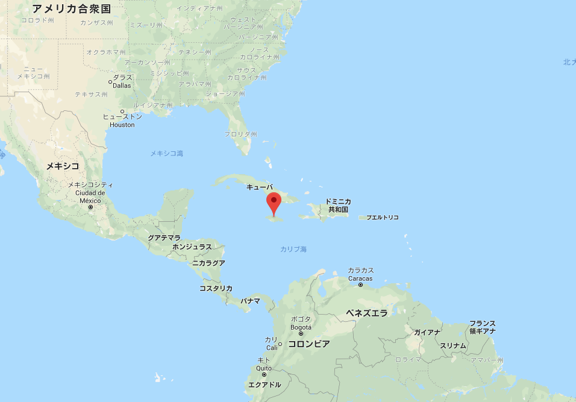
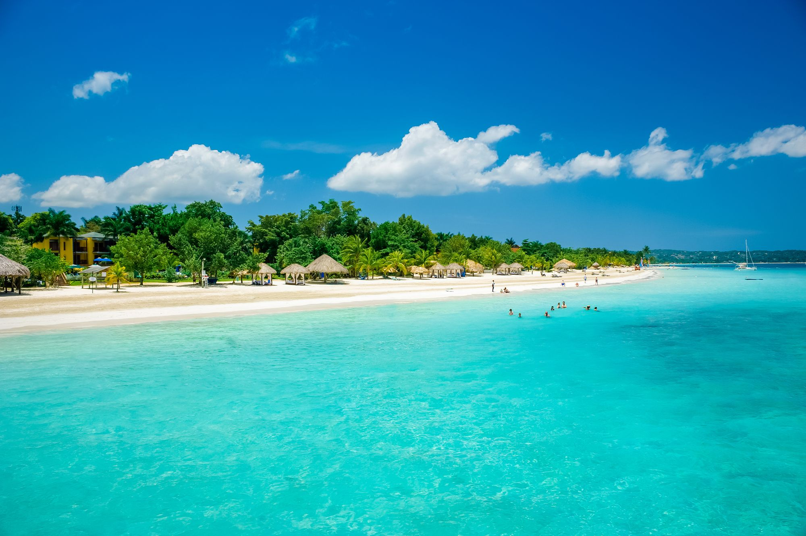
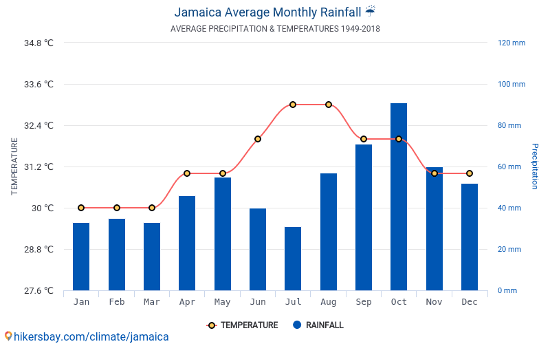
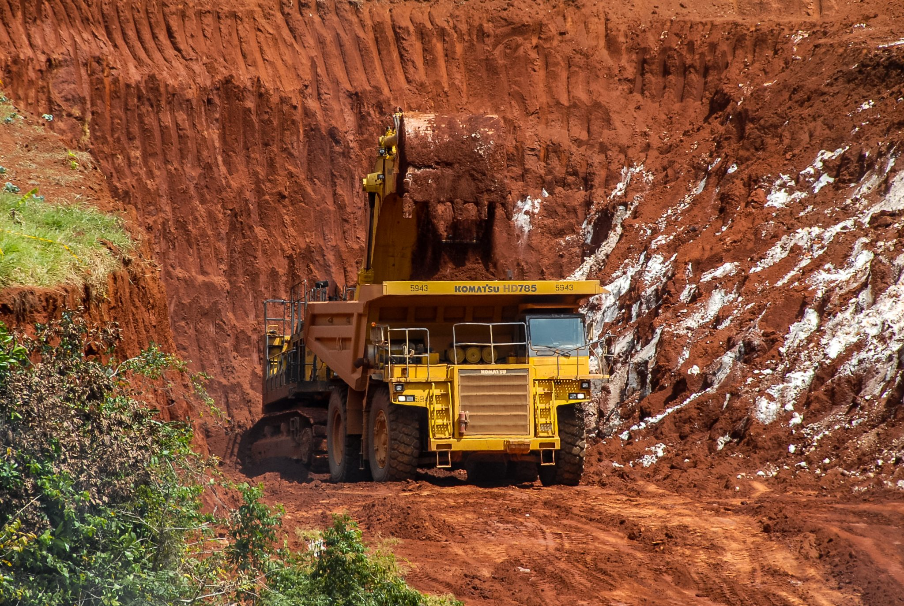
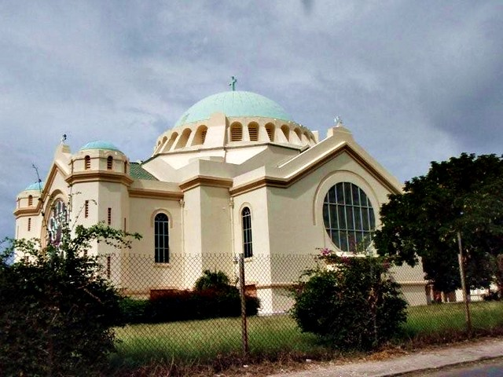
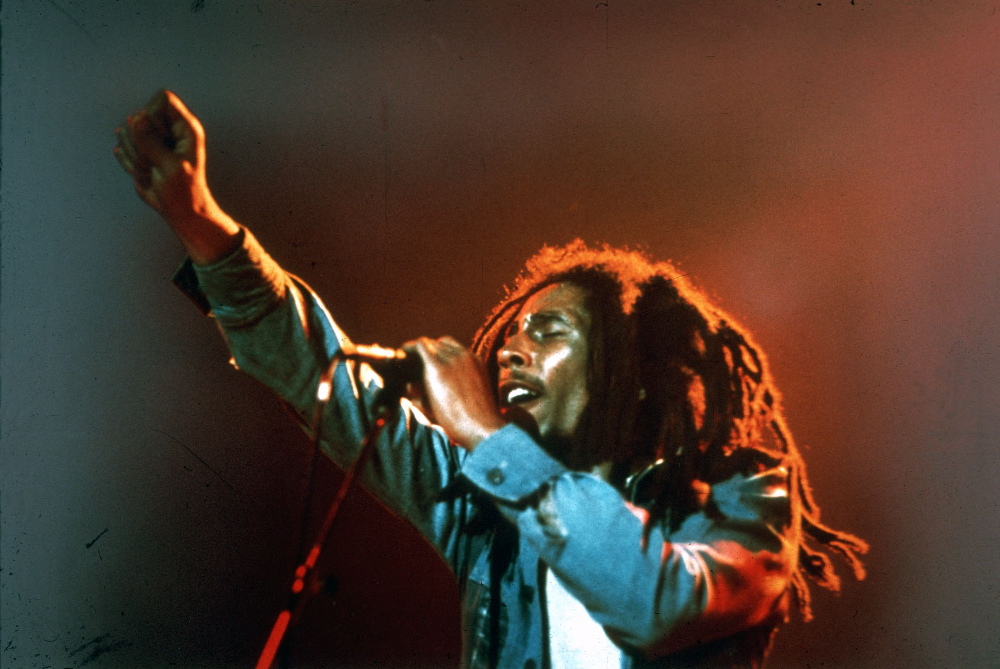
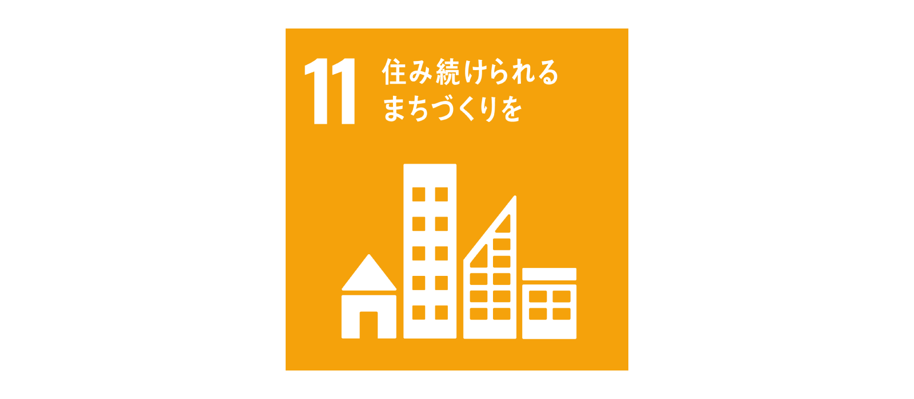
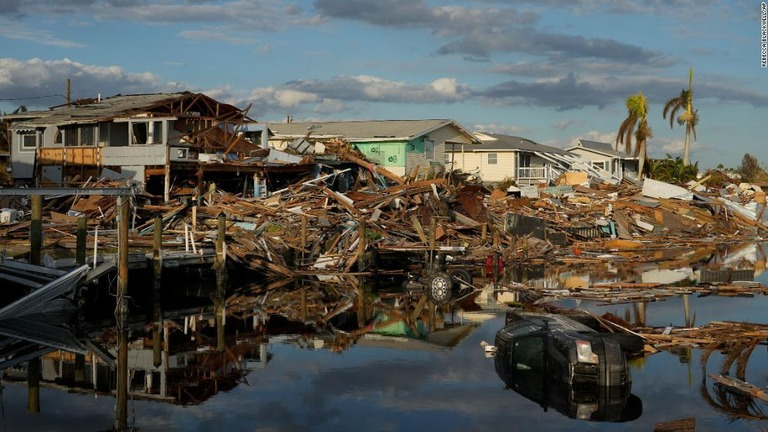

ジャマイカは中央アメリカ、カリブ海の大アンティル諸島にある島国です。主体となるジャマイカ島は大アンティル諸島の中で3番目に大きいくにであり、岐阜県ほどの大きさになっています。
ジャマイカはカリブ海の美しい島で、壮大なビーチ、山、熱帯雨林があります。
ジャマイカでは、夏は暑く、湿度が高く、本曇り、冬は暖かく、乾燥状態、ほぼ晴れ、年間を通じて蒸し暑く、風が強くです。暑い季節である6月〜9月までの平均気温は31℃、比較的涼しい季節の12月〜3月の平均気温は29℃と1年を通して温度の変化が小さくなっています。
ボーキサイトは最重要産業で、外貨獲得の貴重な手段になっています。このボーキサイトの発掘は山の斜面を深く掘り起こすため、自然環境を破壊することになります。さらに、採掘の際に発生するアルミ粉塵が呼吸困難などの健康被害があるため、制限をするべきではありますが、ジャマイカ政府にとってこの産業は手放すのが難しい状況となっています。
もともとジャマイカは300年以上の間イギリスの植民地だったため、イギリスとの結びつきがかなり強いです。英連邦王国の一国として、1962年に独立し、イギリスの国王を自国の元首として迎入れました。
また、政治的な繋がりだけでなく、宗教はプロテスタントが占める割合が高く、公用語も英語など文化の面でもイギリスとの結びつきが強いです。
ジャマイカ独自の特徴は、なんと言ってもアフリカ、ヨーロッパ、インド、中国、中東系の人々が交じり合うことにより、形成された豊かな文化遺産であると思います。特に、伝統的な音楽文化のレゲエなどは現在でも全世界で人気です。
ジャマイカはハリケーンや洪水、大地震など常に自然の猛威と隣り合わせの生活となっています。それにもかかわらず、防災通信網の整備が不十分であるため、警報伝達、被害状況の把握・対応の遅れが課題とされています。そこで政府は迅速な状況報告を可能にするデジタル無線ネットワークの整備に力を入れています。
 ハリケーンによる被害額は何十億～何百億円にも及ぶ